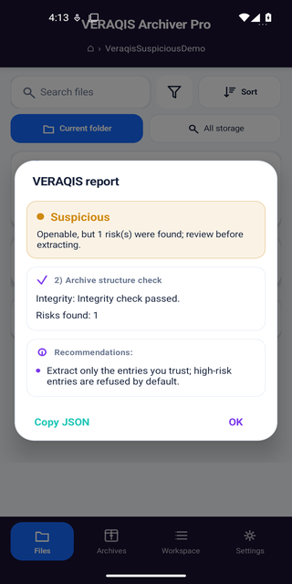
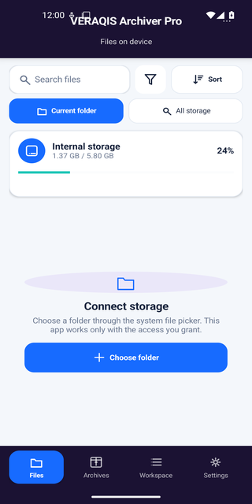
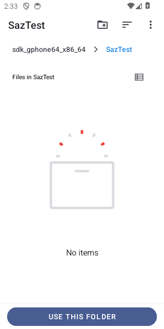
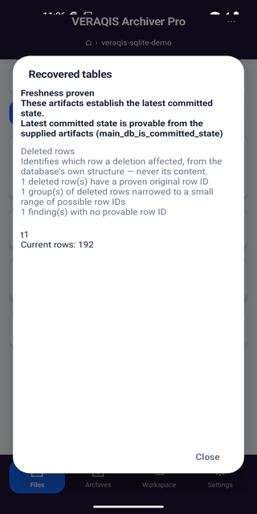
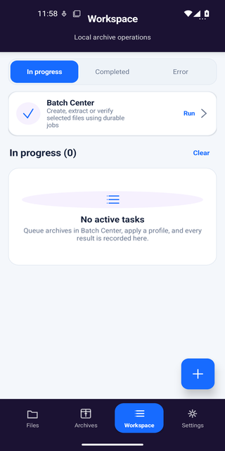
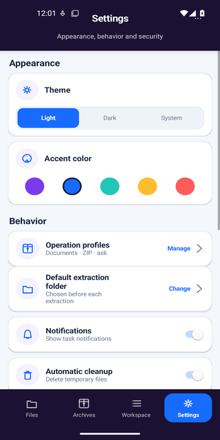
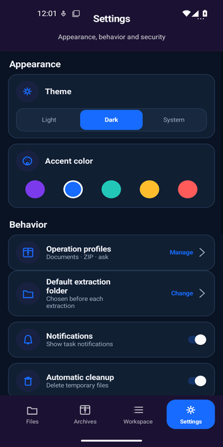

VERAQIS Archiver Pro for Android
Check an archive on your phone before you open it. List and extract only what is safe, into a folder you choose — plus professional local batch, reporting and archive-writing workflows.
Android · 14 languages · offline · no telemetry
No account, telemetry or network permission is required.
Distributed as a directly verifiable signed APK during beta for sideload testing. A Google Play listing is planned after internal testing, Play App Signing and permissions review.
The Android app inspects and extracts archives safely; for a damaged archive (ZIP, 7z, RAR…) it does not perform deep recovery — start with verified ZIP recovery or the guide for a ZIP that will not open.
One narrower exception: on-device, it can recover rows from a damaged SQLite database, and — from the database's own structure alone, never its content — bound or prove which row ID a recent deletion affected.
What it does today
These features are implemented and tested in the current Android build. Mobile is focused on safe inspection and extraction, not deep archive recovery — with one narrower exception, on-device SQLite row recovery, below.
Safety scan before open
A read-only scan classifies the archive — Safe, Suspicious, Blocked, Encrypted or Unsupported — before any content is opened. You decide with the facts in front of you.
“Safe” means structurally safe to extract. File contents were not checked for malware — VERAQIS Archiver is a structural safety inspector, not an antivirus.


Safe listing
See the entries an archive contains without extracting them, with unsafe paths (traversal, absolute, reserved names) flagged rather than followed.

Safe extraction
Extraction is transactional and stays inside the destination you pick — entries that fail a safety or integrity check are not written.
Writes only where you choose
Output is written into the target folder you select through Android's system picker. VERAQIS Archiver doesn't roam your storage.

SQLite row recovery, on-device
Recovers rows from a damaged SQLite database entirely on the phone, in an isolated process. Reports whether the current state is provably fresh or not — never guesses — and can bound or prove the row ID of a recently deleted row from the database's own structure, never from content.
Narrower than desktop. This is SQLite-specific row identity, not the desktop's full semantic reconstruction; it never invents a row's content and withholds a row ID it cannot prove rather than guessing.

Design, from a real build
VERAQIS Archiver Pro was visually relaunched in August 2026 — navigation, layout, color and type all rebuilt. These are screenshots of the current signed build, not mockups.



Honest handling of hard cases
Mobile follows the same rule as the rest of VERAQIS: report the truth, never fake a result.
- Encrypted archives are detected and reported as encrypted — VERAQIS never decrypts, recovers passwords, or bypasses restrictions.
- Unsupported formats are detected and reported honestly rather than guessed at.
- Deep archive recovery on mobile is not available. For a
damaged archive, the mobile recovery entry point returns
NOT_AVAILABLE— the desktop's format-aware structural repair lives on the desktop only. - SQLite row recovery is the one exception. On-device, it can recover rows from a damaged SQLite database and bound or prove a deleted row's original row ID from the database's own structure — never its content, and never a guess when the structure can't prove one.
- Passwords, when supplied, are handled as transient character data and are not stored in models or logs.
Speaks your language
The interface ships in 7 languages, including full right-to-left layout for Arabic.
Translations are reviewed for key parity and placeholder safety; native-speaker polish is ongoing during beta.
Mobile questions
The current Android beta scope, stated without over-claiming.
What does VERAQIS Archiver do?
It scans archives before opening, lists entries safely, and extracts safe entries into a folder you choose.
Does the mobile app perform deep recovery?
For archives (ZIP, 7z, RAR…), no — deep archive recovery workflows belong to VERAQIS Recovery on desktop. For SQLite databases, mobile does have one narrower capability: it can recover rows from a damaged database on-device and, from the database's own structure alone, bound or prove a deleted row's original row ID. It never invents a row's content and never guesses an ID it cannot prove.
Does VERAQIS Archiver store passwords?
No. Passwords, when supplied, are handled as transient character data and are not stored in models or logs.
Is an iOS version available?
No iOS build is available or scheduled for this beta. The current client is Android-specific; an iOS version would require a separate implementation and review.
Built on the VERAQIS Archiver Facade
Every screen talks to the archive engine through a single, Android-free safety facade — never directly to the low-level engine. This keeps every safety decision in one audited place, and is enforced by an architecture test in the build.
One seam
Scan, list, extract, verify, report
and license all flow through the VERAQIS Archiver Facade API (schema v1).
Pure core
The safety logic is a plain Kotlin/JVM module with no Android dependencies, adapted to the phone at the edges only.
No native blobs
No JNI/NDK and no copied-in engine internals — the mobile app is its own clean implementation of the safety surface.